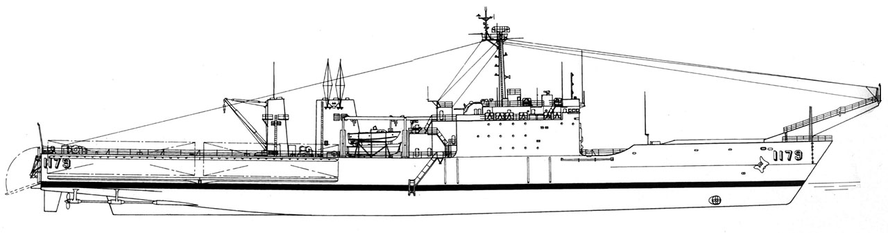

O navio Mattoso Maia foi uma embarcação de grande importância para a Marinha do Brasil, especialmente conhecida por sua atuação em missões de apoio logístico e transporte de pessoal e materiais. Batizado em homenagem ao almirante Mattoso Maia, um renomado oficial da Marinha Brasileira, o navio teve um papel significativo em várias operações realizadas ao longo dos anos.
Deslocamento: 4.975 ton (padrão), 8.576 (carregado). Dimensões: 171.05 m de comprimento, 21.21 m de boca e 5.24 m de calado máximo. Propulsão: Diesel; 6 motores diesel ALCO 16-251, gerando 16.500 hp, acoplados a 2 eixos com hélices de passo controlável. É equipado também com Bow Thrusters de 800 hp. Energia Elétrica: 3 geradores diesel de 750 Kw.
A Operação Atlântico foi uma missão de grande importância para a Marinha do Brasil, na qual o navio Mattoso Maia desempenhou um papel fundamental em diversas ações de apoio logístico e assistência humanitária. Durante essa operação, o navio foi utilizado para transportar materiais e recursos essenciais para áreas isoladas e de difícil acesso ao longo da costa brasileira. O objetivo principal era apoiar a população em situações de emergência, garantindo que as comunidades mais vulneráveis tivessem acesso a itens de primeira necessidade, como alimentos, medicamentos e suprimentos de emergência. A operação também teve um caráter de auxílio a regiões afetadas por desastres naturais, como enchentes e deslizamentos de terra, proporcionando alívio imediato para as vítimas dessas calamidades. Além de seu papel humanitário, o Mattoso Maia também foi crucial para o deslocamento de equipes médicas, profissionais de saúde e unidades da Marinha que prestaram assistência direta à população. O navio, com sua infraestrutura robusta e capacidade de transporte, foi essencial para levar ajuda em lugares de difícil acesso, onde os recursos de ajuda humanitária normalmente não chegam com rapidez. Esse tipo de missão destacou a capacidade da Marinha do Brasil em realizar operações de apoio logístico e de resiliência, consolidando o papel do Mattoso Maia como uma embarcação estratégica para missões de grande alcance e impacto social.
Em várias ocasiões, o navio Mattoso Maia foi envolvido em missões de transporte de tropas e materiais essenciais durante operações de defesa nacional. Como parte da Marinha do Brasil, sua missão era garantir a mobilidade das forças armadas, transportando não apenas pessoal militar, mas também equipamentos bélicos e suprimentos necessários para missões de segurança e defesa. Esse tipo de operação era crucial para manter a prontidão operacional das forças armadas em momentos de necessidade, seja para a realização de treinamentos, seja para a defesa do território nacional em eventuais cenários de conflito. O Mattoso Maia também participou de missões conjuntas com outras forças militares, apoiando operações combinadas em diferentes pontos do Brasil e do exterior. A capacidade do navio de transportar grandes volumes de material bélico, veículos militares e equipes em condições de campo fez dele um ativo estratégico em momentos de alta demanda. Além disso, o navio desempenhou um papel importante no apoio logístico de operações de longo alcance, garantindo que as tropas pudessem se deslocar rapidamente para regiões remotas ou de difícil acesso, assegurando a eficácia das ações militares da Marinha e das Forças Armadas de maneira geral.
Em 2018, o Mattoso Maia desempenhou um papel crucial em uma missão de apoio à infraestrutura em diversas localidades do Nordeste brasileiro. Durante esse período, o navio foi utilizado para transportar recursos e equipes para áreas afetadas por situações adversas, como secas e outras dificuldades socioeconômicas que atingem a região. O objetivo principal da missão era oferecer suporte a comunidades necessitadas, contribuindo para a melhoria das condições de vida por meio do transporte de alimentos, medicamentos e materiais para reconstrução de infraestrutura básica, como estradas e unidades de saúde. Além de seu papel logístico, o Mattoso Maia também atuou no transporte de equipes técnicas e profissionais especializados, como engenheiros e socorristas, para realizar trabalhos de recuperação e reconstrução de áreas afetadas. Essa operação teve um impacto direto na melhoria das condições de vida das populações locais, ao mesmo tempo em que demonstrou a importância do apoio da Marinha em ações sociais e de infraestrutura. A missão também reforçou a presença da Marinha do Brasil no Nordeste, criando uma rede de apoio mais eficaz para enfrentar as adversidades da região. O envolvimento do navio Mattoso Maia em operações como essa demonstrou a versatilidade e a capacidade de resposta rápida da Marinha, não só no âmbito militar, mas também em missões de caráter humanitário e de apoio à população.